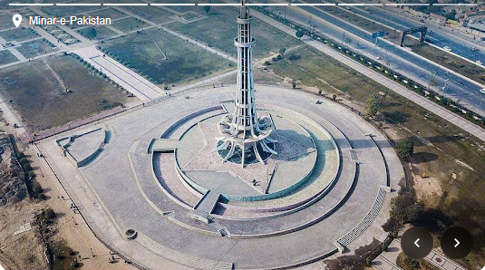
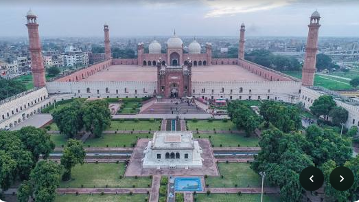

| Home |
|---|

Lahore the capital and largest city of the Pakistani province of Punjab. It is the second-largest city in Pakistan, after Karachi , and 27th largest in the world, with a population of over 14 million. Lahore is one of Pakistan's major industrial, educational and economic hubs. It has been the historic capital and cultural centre of the wider Punjab region, and is one of Pakistan 's most socially liberal, progressive,and cosmopolitan cities
 Lahore
The city has been inhabited for around two millennia, although it rose to prominence in the late
10th century with the establishment of the Walled City, its fortified
interior. Lahore served as the capital of several empires during the
mediaeval era, including the Hindu Shahis, Ghaznavid Empire and Delhi Sultanate.
It reached the height of its splendour under the Mughal Empire between
the late 16th and early 18th centuries, being its capital city for many years.
During this period, it was one of the largest cities in the world.
The city was captured by the forces of the Afsharid ruler Nader Shah in 1739.
Although the Mughal authority was re-established, it fell into a period of
decay while being contested among the Afghans and the Sikhs between 1748
and 1798, eventually becoming capital of the Sikh Empire in the early 19th
century. Lahore was annexed to the British Raj in 1849 and became the capital
of British Punjab.Lahore was central to the independence movements of
British India, with the city being the site of both the Declaration of
Indian Independence and the resolution calling for the establishment of
Pakistan It experienced some of the worst rioting
during the partition of British India preceding
Pakistan's establishment. Following the success of the
Pakistan Movement and the subsequent partition
in 1947
, Lahore was declared the capital of Pakistan's Punjab province.